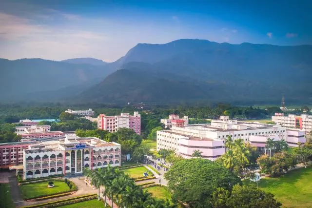

This is the centeral buildibng where researches and other things goes on.
This is the most attractive building in the whole campus.
This building brings a feeling of getting into a new enivornment,
CTC:Computer Technolgy Cener.
This is the place where all the connections of Karunya University.All the conncetions all over the campus from these 3 building
There are 3 CTC buildings in Karunya University.
CTC-1, At the top of Centeral Library(3rd floor).
CTC-2,After the central Library,There is an other building.
CTC-3,It is near the Main Building.
This is the block of Computer Science Engineering.
This is the place where are the CSE Students study.This block contains of 3 floors and very close to the hills of Sirivani.
•Location:This block is situated at the south corner of Karunya University.We can easily go to the CSE Block and it is kinda far away.
This is the block of Electronics and Communication Engineering>
This is a very huge building and CTC-3 is in this ECE block.
•Location: This block is situated at the right side of Main Building.
This is the block ofMechanical Engineering Department
The Mechanical Engineering department focuses on the design, development, and maintenance of machines and mechanical systems.
It covers areas like thermodynamics, manufacturing, fluid mechanics, materials science, and robotics, preparing students for careers in industries such as automotive, aerospace, energy, and manufacturing.
•Location:It is located at the East Side of Karunya University and near Emmanuel Auditorium.
The Artificial Intelligence and Machine Learning department specializes in developing intelligent systems that can learn, adapt, and make decisions.
It focuses on areas like data science, neural networks, natural language processing, and computer vision for solving real-world problems.
•Location:It is located after ECE BLock.
The Aerospace Engineering department focuses on the design, development, and maintenance of aircraft and spacecraft, covering aerodynamics, propulsion, materials, and flight mechanics.
•Location: It is in the Fornt of Mechanical Department Block.
The Aerospace and Mechanical Departments are oppsite to each other.
The Agricultural Engineering department applies engineering principles to improve farming efficiency, covering areas like irrigation, farm machinery, soil management, and post-harvest technology.
•Location: It is on the way to CSE block.When we walk to CSE Block,This Department is on your left side.
The Food Processing department deals with techniques for transforming raw ingredients into safe, high-quality food products, emphasizing preservation, packaging, and quality assurance.
•Location:It is in the between of AI&ML block and ECE block.